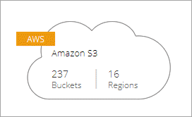
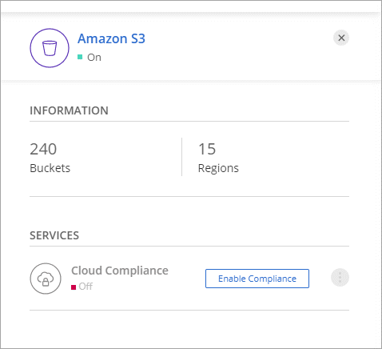
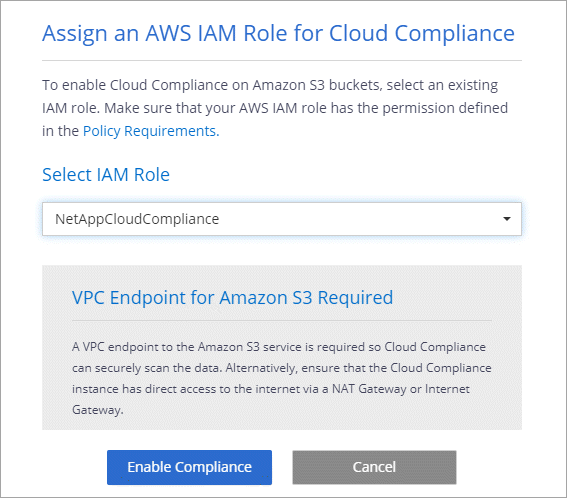
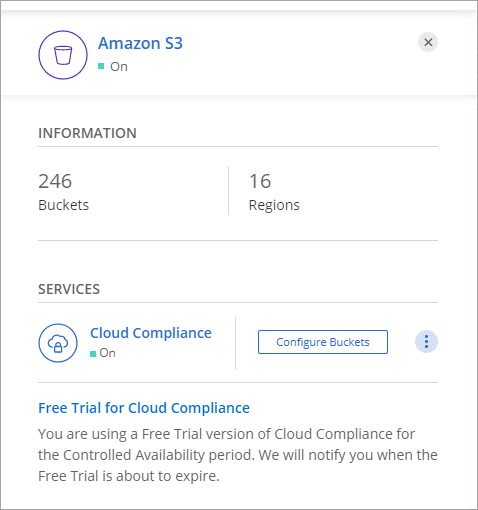
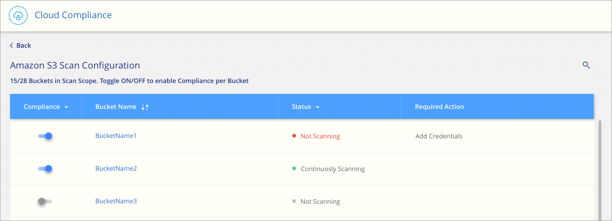

Getting started with Cloud Compliance for Amazon S3 Edit on GitHub Request doc changes
Contributors
Cloud Compliance can scan your Amazon S3 buckets to identify the personal and sensitive data that resides in S3 object storage. Cloud Compliance can scan any bucket in the account, regardless if it was created for a NetApp solution.
Quick start
Get started quickly by following these steps or scroll down to the remaining sections for full details.
 Review prerequisites
Review prerequisites
Ensure that your cloud environment can meet the prerequisites, which includes deploying Cloud Manager in the same account as your S3 buckets, preparing an IAM role, setting up connectivity from Cloud Compliance to S3, and more. See the complete list.
 Enable Cloud Compliance
Enable Cloud Compliance
Select the Amazon S3 working environment, click Enable Compliance, and select an IAM role that includes the required permissions.
 Configure buckets
Configure buckets
Select the buckets that you’d like to scan and Cloud Compliance will start scanning them.
Reviewing prerequisites
Review the following prerequisites to make sure that you have a supported configuration before you enable Cloud Compliance.
Requirements specific to S3
The first three requirements are specific to scanning S3 buckets.
- Ensure that Cloud Manager is in the same account as your S3 buckets
-
Cloud Manager must be running in the AWS account that has the S3 buckets that you want to scan. Cloud Manager automatically discovers the S3 buckets and displays them in an Amazon S3 working environment.
- Set up an IAM role for the Cloud Compliance instance
-
Cloud Compliance needs permissions to connect to the S3 buckets in your account and to scan them. Set up an IAM role that includes the permissions listed below. Cloud Manager prompts you to select an IAM role when you enable Cloud Compliance on the Amazon S3 working environment.
{ "Version": "2012-10-17", "Statement": [ { "Effect": "Allow", "Action": [ "s3:Get*", "s3:List*" ], "Resource": "*" } ] }
| The AWS-managed policy AmazonS3ReadOnlyAccess includes these required permissions. |
- Provide connectivity from Cloud Compliance to Amazon S3
-
Cloud Compliance needs a connection to Amazon S3. The best way to provide that connection is through a VPC Endpoint to the S3 service. For instructions, see AWS Documentation: Creating a Gateway Endpoint.
When you create the VPC Endpoint, be sure to select the region, VPC, and route table that corresponds to the Cloud Compliance instance. You must also modify the security group to add an outbound HTTPS rule that enables traffic to the S3 endpoint. Otherwise, Cloud Compliance can’t connect to the S3 service.
If you experience any issues, see AWS Support Knowledge Center: Why can’t I connect to an S3 bucket using a gateway VPC endpoint?
An alternative is to provide the connection by using a NAT Gateway.
You can’t use a proxy to get to S3 over the internet.
General requirements
The remaining requirements apply to Cloud Compliance in general, whether you’re scanning Amazon S3, Cloud Volumes ONTAP, or Azure NetApp Files. If you’ve already enabled Cloud Compliance for Cloud Volumes ONTAP or Azure NetApp Files, then you can skip these.
- Enable outbound internet access
-
Cloud Compliance requires outbound internet access. If your virtual network uses a proxy server for internet access, ensure that the Cloud Compliance instance has outbound internet access to contact the following endpoints. Note that Cloud Manager deploys the Cloud Compliance instance in the same subnet as Cloud Manager.
Endpoints Purpose https://cloudmanager.cloud.netapp.com
Communication with the Cloud Manager service, which includes Cloud Central accounts.
https://netapp-cloud-account.auth0.com
Communication with NetApp Cloud Central for centralized user authentication.
https://cloud-compliance-support-netapp.s3.us-west-1.amazonaws.com
https://hub.docker.comProvides access to software images, manifests, and templates.
https://kinesis.us-east-1.amazonaws.com
Enables NetApp to stream data from audit records.
https://cognito-idp.us-east-1.amazonaws.com
https://cognito-identity.us-east-1.amazonaws.comEnables Cloud Compliance to access and download manifests and templates, and to send logs and metrics.
- Ensure that Cloud Manager has the required permissions
-
Ensure that Cloud Manager has permissions to deploy resources and create security groups for the Cloud Compliance instance. You can find the latest Cloud Manager permissions in the policies provided by NetApp.
- Check your vCPU limits
-
Ensure that your cloud provider’s vCPU limit allows for the deployment of an instance with 16 cores. You’ll need to verify the vCPU limit for the relevant instance family in the region where Cloud Manager is running.
In AWS, the instance family is On-Demand Standard instances. In Azure, the instance family is Standard DSv3 Family.
For more details on vCPU limits, see the following:
- Ensure that Cloud Manager can access Cloud Compliance
-
Ensure connectivity between Cloud Manager and the Cloud Compliance instance:
-
The security group for Cloud Manager must allow inbound and outbound traffic over port 80 to and from the Cloud Compliance instance.
This connection enables deployment of the Cloud Compliance instance and enables you to view information in the Compliance tab.
-
If your AWS network doesn’t use a NAT or proxy for internet access, modify the security group for Cloud Manager to allow inbound traffic over TCP port 3128 from the Cloud Compliance instance.
This is required because the Cloud Compliance instance uses Cloud Manager as a proxy to access the internet.
This port is open by default on all new Cloud Manager instances, starting with version 3.7.5. It’s not open on Cloud Manager instances created prior to that.
-
- Ensure that you can keep Cloud Compliance running
-
The Cloud Compliance instance needs to stay on to continuously scan your data.
- Ensure web browser connectivity to Cloud Compliance
-
After Cloud Compliance is enabled, ensure that users access the Cloud Manager interface from a host that has a connection to the Cloud Compliance instance.
The Cloud Compliance instance uses a private IP address to ensure that the indexed data isn’t accessible to the internet. As a result, the web browser that you use to access Cloud Manager must have a connection to that private IP address. That connection can come from a direct connection to AWS or Azure (for example, a VPN), or from a host that’s inside the same network as the Cloud Compliance instance.
If you’re accessing Cloud Manager from a public IP address, then your web browser probably isn’t running on a host inside the network.
Enabling Cloud Compliance
Enable Cloud Compliance on Amazon S3 after you verify the prerequisites.
-
At the top of Cloud Manager, click Working Environments.
-
Select the Amazon S3 working environment.

-
In the pane on the right, click Enable Compliance.

-
When prompted, assign an IAM role to the Cloud Compliance instance that has the required permissions.

-
Click Enable Compliance.
If the Cloud Compliance instance hasn’t been deployed yet, Cloud Manager deploys it. If it has been deployed, Cloud Manager assigns the IAM role to the instance.
Configuring buckets
After Cloud Manager enables Cloud Compliance on Amazon S3, the next step is to configure the buckets that you want to scan.
-
Select the Amazon S3 working environment.
-
In the pane on the right, click Configure Buckets.

-
Select the buckets that you want to scan.

Cloud Compliance starts scanning the S3 buckets that you selected. If there are any errors, they’ll appear in the Status column, alongside the required action to fix the error.